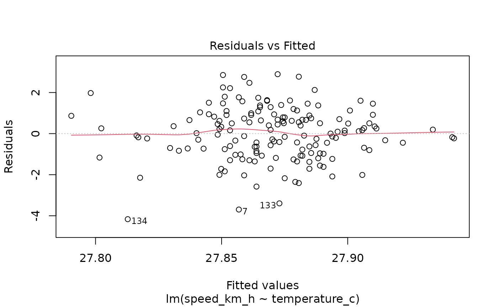
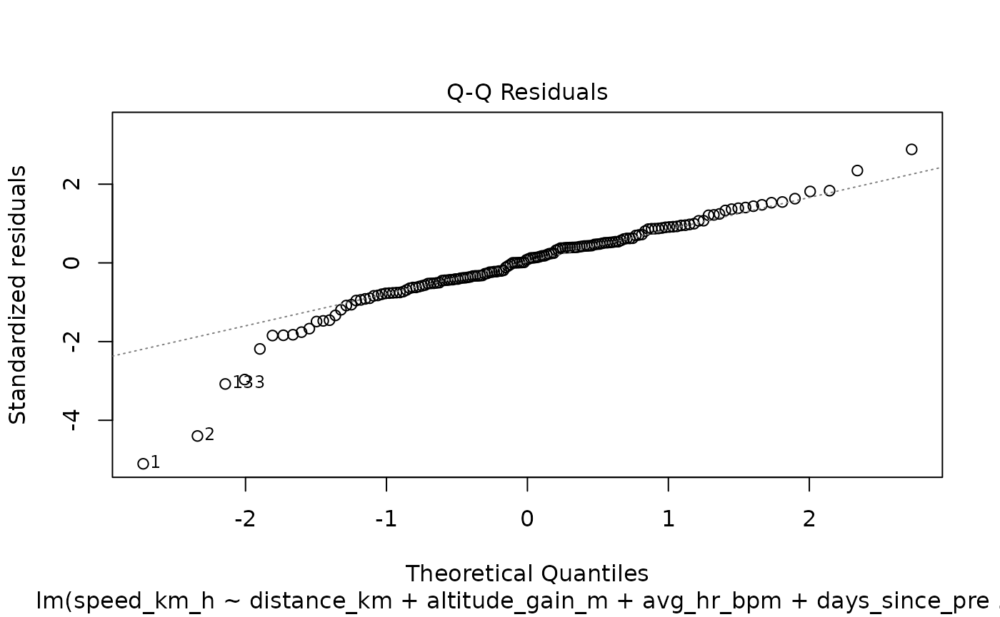
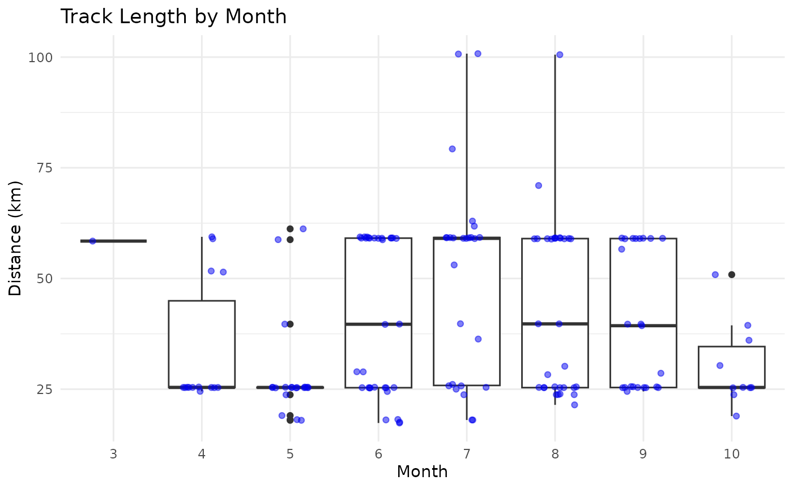

Praxismodul CAS ASDS 2024
presentation.RmdAnalyses
The Same Model, 2. Attempt
summary(fit_corrected)
#>
#> Call:
#> lm(formula = speed_km_h ~ distance_km + altitude_gain_m + avg_hr_bpm,
#> data = corrected_tracks)
#>
#> Residuals:
#> Min 1Q Median 3Q Max
#> -3.4012 -0.4991 0.0429 0.5594 2.6588
#>
#> Coefficients:
#> Estimate Std. Error t value Pr(>|t|)
#> (Intercept) 18.167351 1.392919 13.043 < 2e-16 ***
#> distance_km 0.086997 0.014346 6.064 9.94e-09 ***
#> altitude_gain_m -0.008541 0.001084 -7.881 5.64e-13 ***
#> avg_hr_bpm 0.069361 0.009380 7.394 8.71e-12 ***
#> ---
#> Signif. codes: 0 '***' 0.001 '**' 0.01 '*' 0.05 '.' 0.1 ' ' 1
#>
#> Residual standard error: 0.9388 on 153 degrees of freedom
#> Multiple R-squared: 0.4825, Adjusted R-squared: 0.4723
#> F-statistic: 47.55 on 3 and 153 DF, p-value: < 2.2e-16Temperature Effects


summary(fit_temperature)
#>
#> Call:
#> lm(formula = speed_km_h ~ temperature_c, data = corrected_tracks)
#>
#> Residuals:
#> Min 1Q Median 3Q Max
#> -4.1644 -0.8346 0.0939 0.8662 2.8922
#>
#> Coefficients:
#> Estimate Std. Error t value Pr(>|t|)
#> (Intercept) 28.013494 0.573848 48.817 <2e-16 ***
#> temperature_c -0.006994 0.027551 -0.254 0.8
#> ---
#> Signif. codes: 0 '***' 0.001 '**' 0.01 '*' 0.05 '.' 0.1 ' ' 1
#>
#> Residual standard error: 1.296 on 155 degrees of freedom
#> Multiple R-squared: 0.0004156, Adjusted R-squared: -0.006033
#> F-statistic: 0.06444 on 1 and 155 DF, p-value: 0.7999Effect of Previous Training

summary(fit_pt)
#>
#> Call:
#> lm(formula = speed_km_h ~ distance_km + altitude_gain_m + avg_hr_bpm +
#> days_since_previous_training + distance_km_previous_training +
#> altitude_gain_m_previous_training, data = augmented_tracks)
#>
#> Residuals:
#> Min 1Q Median 3Q Max
#> -3.2960 -0.4750 0.0799 0.5310 2.6460
#>
#> Coefficients:
#> Estimate Std. Error t value Pr(>|t|)
#> (Intercept) 17.7157517 1.4135832 12.533 < 2e-16 ***
#> distance_km 0.0839005 0.0142507 5.887 2.50e-08 ***
#> altitude_gain_m -0.0085198 0.0010838 -7.861 7.07e-13 ***
#> avg_hr_bpm 0.0720788 0.0093865 7.679 1.96e-12 ***
#> days_since_previous_training -0.0037392 0.0018366 -2.036 0.0435 *
#> distance_km_previous_training 0.0108701 0.0142031 0.765 0.4453
#> altitude_gain_m_previous_training -0.0004616 0.0010797 -0.428 0.6696
#> ---
#> Signif. codes: 0 '***' 0.001 '**' 0.01 '*' 0.05 '.' 0.1 ' ' 1
#>
#> Residual standard error: 0.9267 on 149 degrees of freedom
#> Multiple R-squared: 0.506, Adjusted R-squared: 0.4861
#> F-statistic: 25.44 on 6 and 149 DF, p-value: < 2.2e-16Training Effect over the Course of the Season

summary(fit_month)
#>
#> Call:
#> lm(formula = speed_km_h ~ as.factor(month(date)), data = augmented_tracks)
#>
#> Residuals:
#> Min 1Q Median 3Q Max
#> -3.9479 -0.8291 0.1294 0.8018 3.0219
#>
#> Coefficients:
#> Estimate Std. Error t value Pr(>|t|)
#> (Intercept) 26.9297 1.2863 20.936 <2e-16 ***
#> as.factor(month(date))4 1.2657 1.3314 0.951 0.343
#> as.factor(month(date))5 1.5226 1.3180 1.155 0.250
#> as.factor(month(date))6 0.7667 1.3062 0.587 0.558
#> as.factor(month(date))7 0.6666 1.3118 0.508 0.612
#> as.factor(month(date))8 0.8073 1.3069 0.618 0.538
#> as.factor(month(date))9 1.1544 1.3139 0.879 0.381
#> as.factor(month(date))10 0.7003 1.3491 0.519 0.604
#> ---
#> Signif. codes: 0 '***' 0.001 '**' 0.01 '*' 0.05 '.' 0.1 ' ' 1
#>
#> Residual standard error: 1.286 on 148 degrees of freedom
#> Multiple R-squared: 0.05464, Adjusted R-squared: 0.009931
#> F-statistic: 1.222 on 7 and 148 DF, p-value: 0.2941
summary(fit_month_and_more)
#>
#> Call:
#> lm(formula = speed_km_h ~ as.factor(month(date)) * (distance_km +
#> avg_hr_bpm + altitude_gain_m), data = augmented_tracks)
#>
#> Residuals:
#> Min 1Q Median 3Q Max
#> -2.29808 -0.37768 0.03974 0.42347 1.80731
#>
#> Coefficients: (3 not defined because of singularities)
#> Estimate Std. Error t value Pr(>|t|)
#> (Intercept) 21.602217 4.331986 4.987 1.97e-06
#> as.factor(month(date))4 11.979342 7.250270 1.652 0.10095
#> as.factor(month(date))5 1.735518 6.744440 0.257 0.79734
#> as.factor(month(date))6 -15.428425 5.285295 -2.919 0.00415
#> as.factor(month(date))7 -13.421991 5.298444 -2.533 0.01252
#> as.factor(month(date))8 -8.688334 5.071651 -1.713 0.08913
#> as.factor(month(date))9 -3.169937 5.377458 -0.589 0.55658
#> as.factor(month(date))10 1.033590 1.108009 0.933 0.35268
#> distance_km 0.124555 0.055002 2.265 0.02524
#> avg_hr_bpm 0.028955 0.030526 0.949 0.34465
#> altitude_gain_m -0.008950 0.003715 -2.409 0.01743
#> as.factor(month(date))4:distance_km -0.027517 0.075370 -0.365 0.71565
#> as.factor(month(date))5:distance_km 0.096736 0.086657 1.116 0.26640
#> as.factor(month(date))6:distance_km 0.221298 0.083428 2.653 0.00901
#> as.factor(month(date))7:distance_km -0.110274 0.057326 -1.924 0.05664
#> as.factor(month(date))8:distance_km 0.048958 0.061350 0.798 0.42636
#> as.factor(month(date))9:distance_km -0.075128 0.088159 -0.852 0.39571
#> as.factor(month(date))10:distance_km NA NA NA NA
#> as.factor(month(date))4:avg_hr_bpm -0.056935 0.049573 -1.149 0.25291
#> as.factor(month(date))5:avg_hr_bpm 0.001212 0.044021 0.028 0.97809
#> as.factor(month(date))6:avg_hr_bpm 0.116332 0.036647 3.174 0.00188
#> as.factor(month(date))7:avg_hr_bpm 0.112295 0.037204 3.018 0.00307
#> as.factor(month(date))8:avg_hr_bpm 0.072590 0.035205 2.062 0.04125
#> as.factor(month(date))9:avg_hr_bpm 0.043710 0.037488 1.166 0.24581
#> as.factor(month(date))10:avg_hr_bpm NA NA NA NA
#> as.factor(month(date))4:altitude_gain_m -0.003426 0.005268 -0.650 0.51667
#> as.factor(month(date))5:altitude_gain_m -0.009920 0.005948 -1.668 0.09784
#> as.factor(month(date))6:altitude_gain_m -0.019151 0.006122 -3.128 0.00218
#> as.factor(month(date))7:altitude_gain_m 0.005902 0.003930 1.502 0.13570
#> as.factor(month(date))8:altitude_gain_m -0.005552 0.004213 -1.318 0.19000
#> as.factor(month(date))9:altitude_gain_m 0.002707 0.006209 0.436 0.66353
#> as.factor(month(date))10:altitude_gain_m NA NA NA NA
#>
#> (Intercept) ***
#> as.factor(month(date))4
#> as.factor(month(date))5
#> as.factor(month(date))6 **
#> as.factor(month(date))7 *
#> as.factor(month(date))8 .
#> as.factor(month(date))9
#> as.factor(month(date))10
#> distance_km *
#> avg_hr_bpm
#> altitude_gain_m *
#> as.factor(month(date))4:distance_km
#> as.factor(month(date))5:distance_km
#> as.factor(month(date))6:distance_km **
#> as.factor(month(date))7:distance_km .
#> as.factor(month(date))8:distance_km
#> as.factor(month(date))9:distance_km
#> as.factor(month(date))10:distance_km
#> as.factor(month(date))4:avg_hr_bpm
#> as.factor(month(date))5:avg_hr_bpm
#> as.factor(month(date))6:avg_hr_bpm **
#> as.factor(month(date))7:avg_hr_bpm **
#> as.factor(month(date))8:avg_hr_bpm *
#> as.factor(month(date))9:avg_hr_bpm
#> as.factor(month(date))10:avg_hr_bpm
#> as.factor(month(date))4:altitude_gain_m
#> as.factor(month(date))5:altitude_gain_m .
#> as.factor(month(date))6:altitude_gain_m **
#> as.factor(month(date))7:altitude_gain_m
#> as.factor(month(date))8:altitude_gain_m
#> as.factor(month(date))9:altitude_gain_m
#> as.factor(month(date))10:altitude_gain_m
#> ---
#> Signif. codes: 0 '***' 0.001 '**' 0.01 '*' 0.05 '.' 0.1 ' ' 1
#>
#> Residual standard error: 0.7569 on 127 degrees of freedom
#> Multiple R-squared: 0.7191, Adjusted R-squared: 0.6572
#> F-statistic: 11.61 on 28 and 127 DF, p-value: < 2.2e-16
summary(fit_calendar_week_and_more)
#>
#> Call:
#> lm(formula = speed_km_h ~ isoweek(date) * (distance_km + avg_hr_bpm +
#> altitude_gain_m), data = augmented_tracks)
#>
#> Residuals:
#> Min 1Q Median 3Q Max
#> -3.2472 -0.4744 0.0738 0.5945 2.4220
#>
#> Coefficients:
#> Estimate Std. Error t value Pr(>|t|)
#> (Intercept) 21.9067086 6.0473912 3.623 0.00040 ***
#> isoweek(date) -0.1450550 0.2024201 -0.717 0.47475
#> distance_km 0.2098271 0.0893882 2.347 0.02023 *
#> avg_hr_bpm 0.0426069 0.0398867 1.068 0.28717
#> altitude_gain_m -0.0196845 0.0064399 -3.057 0.00266 **
#> isoweek(date):distance_km -0.0041175 0.0029190 -1.411 0.16046
#> isoweek(date):avg_hr_bpm 0.0010313 0.0013452 0.767 0.44451
#> isoweek(date):altitude_gain_m 0.0003751 0.0002098 1.788 0.07583 .
#> ---
#> Signif. codes: 0 '***' 0.001 '**' 0.01 '*' 0.05 '.' 0.1 ' ' 1
#>
#> Residual standard error: 0.9235 on 148 degrees of freedom
#> Multiple R-squared: 0.5127, Adjusted R-squared: 0.4897
#> F-statistic: 22.25 on 7 and 148 DF, p-value: < 2.2e-16